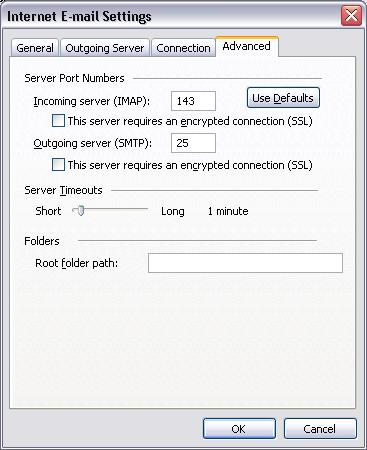

Конфигуриране на Outlook 2003
След стартиране на Outlook се избира от лентата с основното меню “Tools”-> ”E-mail Accounts…”->
Избира се ”Add a new e-mail account” и се натиска бутона "Next" ->
Избира се ”POP3” или "IMAP" и се натиска бутона ”Next”->

В новия прозорец се опълват следните настройки:
“Your Name:” – “Име на Ползвателя”
“E-mail Address:” – “youremail@mail.applet-bg.com”, или е-мейл към вашият домейн хостван от Аплет
“Incoming mail server (POP3) или (IMAP):” – “mail.applet-bg.com”, или вашият е-мейл сървер хостван от Аплет
“Outgoing mail server (SMTP):” – “mail.applet-bg.com”, или вашият е-мейл сървер хостван от Аплет
“User Name:” – “youremail@mail.applet-bg.com” (целия адрес задължително се вписва)
“Password” – “********”
Избира се бутона “More Settings …”
Избира се Tab “General” -> “Mail Account” и се вписва име на акаунта (Applet Mail) ->
Tab “Outgoing Server” -> чеква се кутииката “My outgoing server (SMTP) requires Authentication” ->
Ако се използва POP3, кликнете на “Advanced” -> отмятат се кутиики – “Leave copy of messages on the server”. “Remove from server after 10 days” и “Remove from server when deleted from ‘Deleted Items’” ->
Ако се използва IMAP, кликнете на “Advanced” -> на полето "Root folder path:" впишете "INBOX"

След което се потвърждава с “OK”, “Next”, и “Finish”
Ако всичко е настроено вярно и ИМАТЕ ИНТЕРНЕТ то тогава ще се появи презорчето за проверяване на поща: